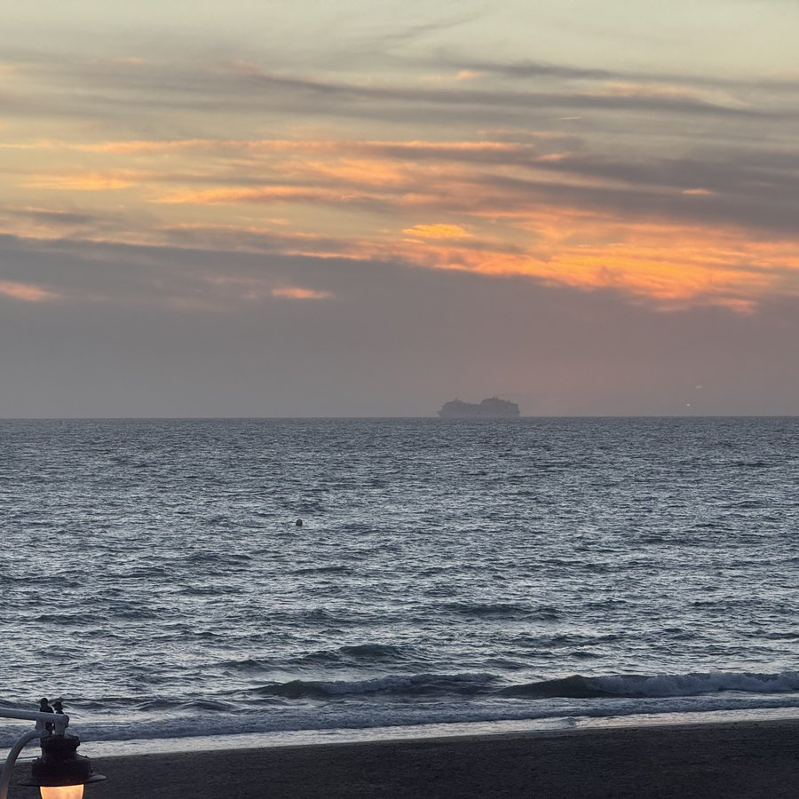
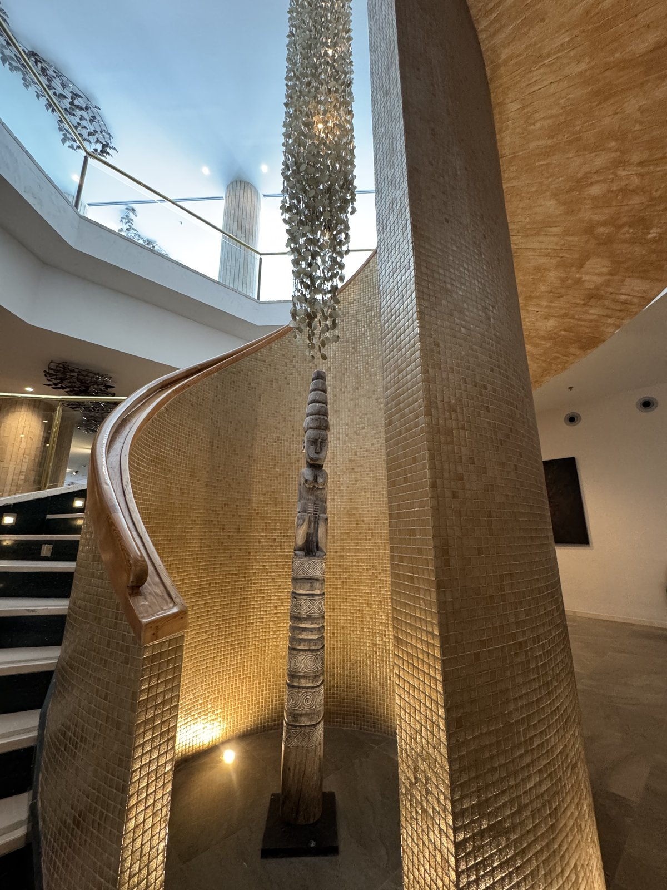
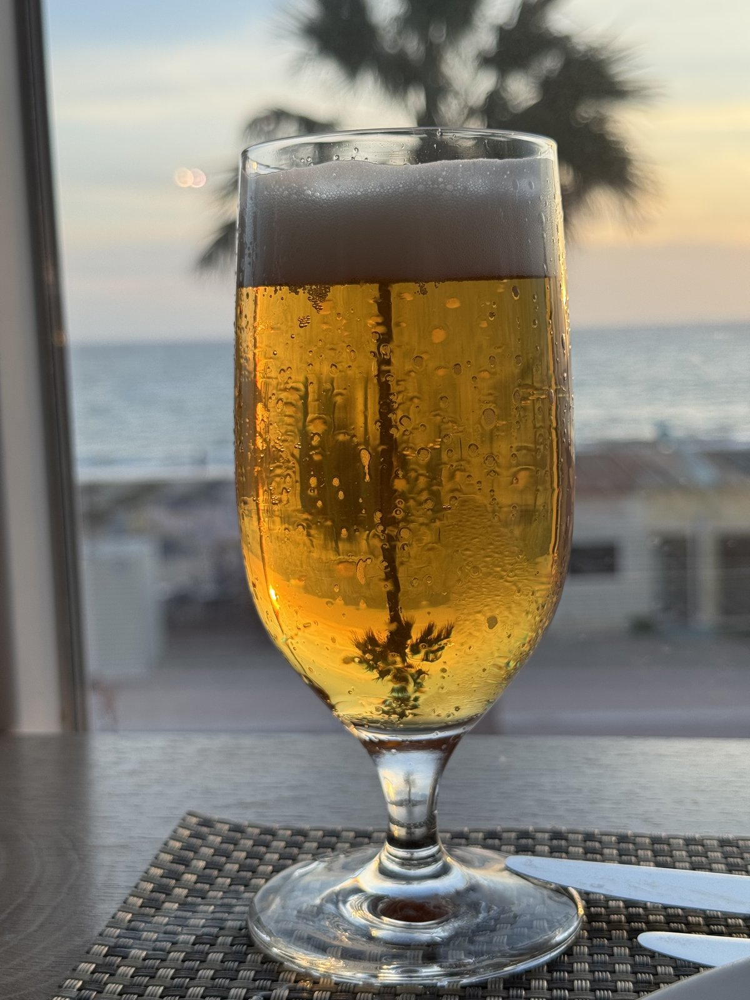
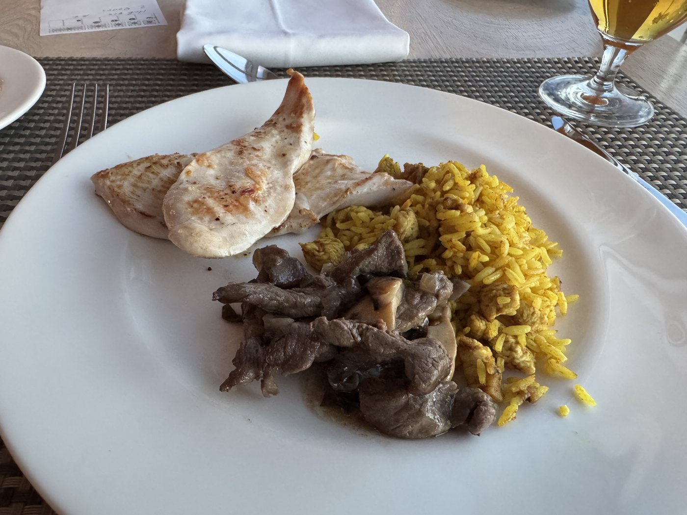
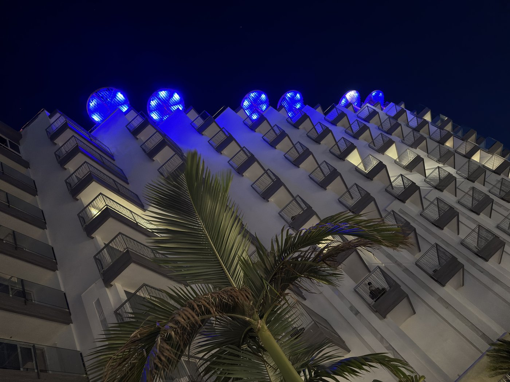
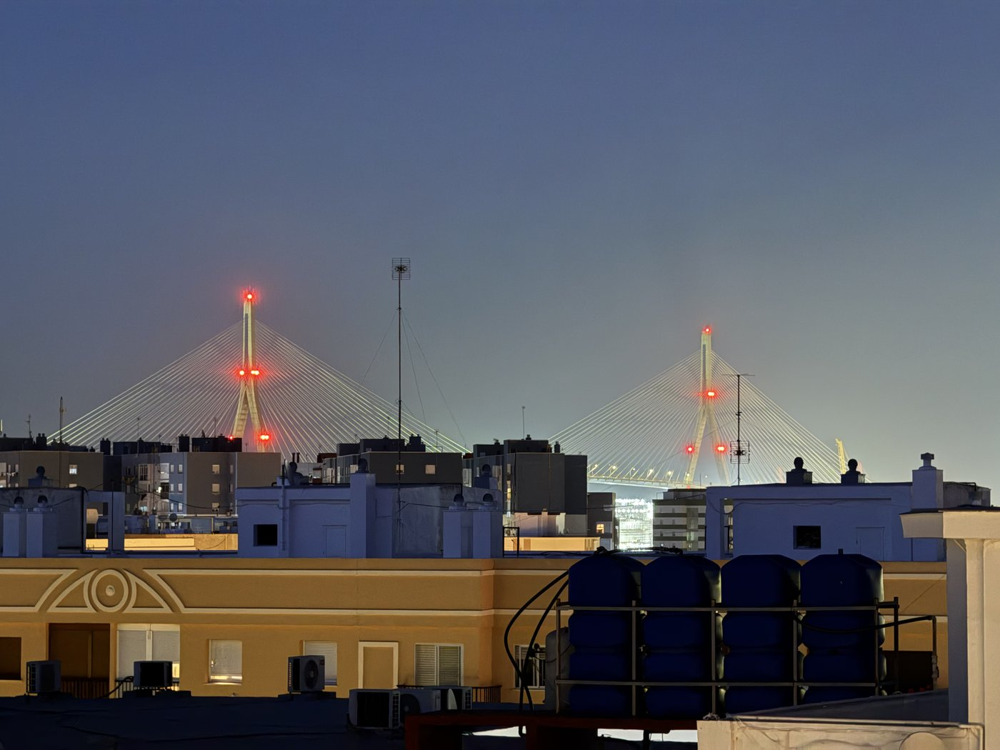

Letzter voller Urlaubstag. Um 08:40 geht morgen der Flieger, drei Stunden vorher — um 05:40 — werden wir am Hotel abgeholt, und wir sollen schon fünfzehn Minuten vor der Zeit unten sein.
Nuja. Wecker ist gestellt, und daheim ist es ja auch ganz schön.
Aber im Ernst: Cádiz hatte ich als Urlaubsziel gar nicht so auf der Pfanne. Es hat sich sowas von gelohnt.
Heute haben wir außer Packen nochmal ziemlich gar nichts gemacht. Nur gemütlich an der Poolbar gechillt und noch ein paar Fotos vom Hotel eingefangen.

Zu Mittag haben wir nichts gegessen, außer einem kleinen Snack — und dafür abends nochmal das Buffetrestaurant ausprobiert. Das ist zwar nur von 20 bis 22 Uhr geöffnet und die Auswahl ist nicht riesig, aber gut.
Plus: Wir waren ziemlich pünktlich zum Öffnen unten und haben so noch einen guten Platz erwischt. Inklusive Blick auf den Sonnenuntergang.


Und dann verließ die MSC Virtuosa den Hafen und bildete gegen das Castillo de San Sebastián und weiter auf ihrem Kurs Richtung Málaga ein schönes Fotomotiv.
Auch das Wetter versuchte, uns den Abschied leicht zu machen. Nach Tagen Levante — dem trockenen, heißen Ostwind — hatte der Wind in der Nacht gedreht, und seit dem Morgen hatten wir einen kräftigen Poniente, der vom offenen Atlantik kommt. Deutlich kühler als die letzten Tage, und auch wesentlich mehr Gewölk.
Schön, ja. Angenehm, auch ja. Aber gerade an diesem Abend hat man den Unterschied schon deutlich gemerkt. Im Restaurant hat der Wind dafür schön die Leuchter gewirbelt.


Nunja. Um 5 ist die Nacht zuende.
Buenas noches.